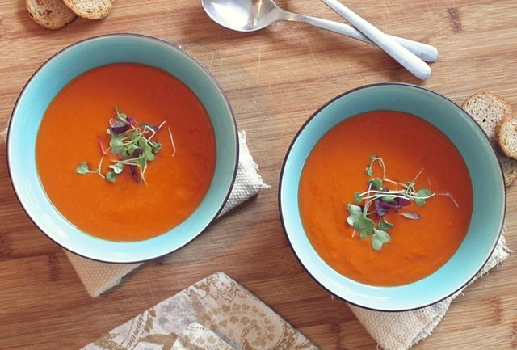

Soup 
Beethoven once saidOnly the pure of heart can make a good soup
. Well, here's my attempt at doing
just
that!
Steps:
- Step 1
- Step 2
- Step 3
- Enjoy!
Beethoven once saidOnly the pure of heart can make a good soup
. Well, here's my attempt at doing
just
that!

Who can resist a fresh salad ! Here's one of my favorites.